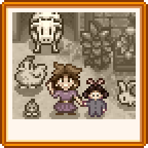
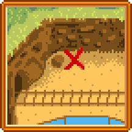
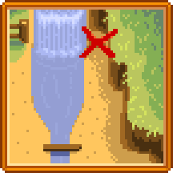
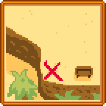
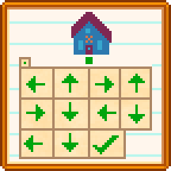
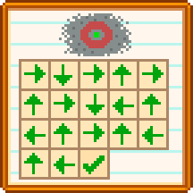
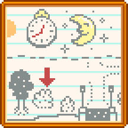

Secret Notes
- See also: Journal Scraps
Secret Notes are collectible notes that can be unlocked by walking to the Bus Stop from The Farm during Winter between 6am and 4pm. The player will see a cutscene in which a "Shadow Guy" (who could be Krobus) startles and runs away. After seeing the cutscene, the quest "A Winter Mystery" is added to the player's journal.
The Shadow Guy's footsteps lead to a bush next to the playground, left of the Community Center. If the player interacts with the bush, the Shadow Guy will pop out of it, apologize for stealing, give the player a Magnifying Glass, then run away. The Magnifying Glass gives the player the ability to find Secret Notes while digging, chopping trees, mining, fishing, or killing monsters.
Once found, a Secret Note can be read by selecting it in the top row of inventory and right-clicking (as if consuming food). This will add the note to the player's collection, and enable the Secret Notes collection tab on the player menu.
Some notes will list "Loved" gifts for certain characters, while others will have images depicting puzzle solutions. Reading notes that list gift preferences will add the gifts to the villager's Gift Log on the Social tab of the player menu.
Secret Notes can be gifted, but they are all universally hated.
Secret Note Sources
The following table lists the different actions that can spawn a secret note.
The "Chance" column below indicates the probabilities that the game will attempt to spawn a secret note. When such an attempt is made, the game performs a further check to see if it succeeds, based on the number of notes of the appropriate type (Journal Scraps on Ginger Island, regular Secret Notes elsewhere) that the player has already found. If all notes have been found, the check fails. Otherwise, the probability of success is a linear function of the number of notes found, where there's an 80% chance of success if no notes have been found, and a 12% chance of success if all but one have been found [1].
| Activity | Chance |
|---|---|
| Weeds [2] | 0.9% |
| Monsters [3] | 3.3% |
| Chopping trees (Each Axe hit) [4] | 0.5% |
| Fishing [5] | 8% to replace trash |
| Artifact Spot [6] | 11% (After artifact checks and winter forage checks) |
| Stone [7] | 0.75% |
| Resource clump * [8] | 5% |
| Giant crop [9] | 100% |
* Resource Clump = Large Stump, Large Log, Meteorite, or Boulder (inside or outside The Mines).
Secret Notes
Secret Note #1
| Note |
|---|
| It's a page from Abigail's Diary
'Things I love: the smell of carved pumpkin, keeping an amethyst under my pillow, chocolate cake, the thrill of spicy eel, and the comfort of Mom's blackberry cobbler (I like to eat!)' |
Secret Note #2
| Note |
|---|
| It's Sam's holiday shopping list
Everyone's favorites
|
Secret Note #3
| Note |
|---|
| It's written in Leah's handwriting
My idea of a perfect dinner would be salad, goat cheese, truffle, and wine. For dessert I'd need a poppyseed muffin. Yum! If someone gave me one of those things, I'd melt. |
Secret Note #4
| Note |
|---|
| It's a note of Maru's
Parts still needed for my greatest invention yet! |
Secret Note #5
| Note |
|---|
| It's Penny's handwriting:
I want to get everyone something they love! Mom: Parsnip, Glazed Yams, NO BEER!
|
Secret Note #6
| Note |
|---|
| Stardrop Saloon Special Orders
Mayor Lewis: Autumn's Bounty
Marnie: Pumpkin Pie
Demetrius: Bean Hotpot
Caroline: Fish Taco
|
Secret Note #7
| Note |
|---|
| It's a page from someone's diary...
...There are only a few 'older' bachelors in town, and none of them are perfect! Harvey is really anxious and weak, but I know he would make a loyal and devoted husband. He likes coffee and pickles. Elliott is a bit foppish and melodramatic, but he does have a nice chin. He likes crab cakes and pomegranates. Shane is messy and anti-social. But I think his gruff exterior is a defense mechanism, insulating his softness from the world. He likes Beer, Pizza, and Pepper Poppers. |
Secret Note #8
| Note |
|---|
| To Haley and Emily
Hope you two are doing well! We've sent you your favorite gifts: Pink Cake and Sunflowers for Haley, Gemstones and Wool for Emily! -Love Mom and Dad |
Secret Note #9
| Note |
|---|
| Alex's Strength Training Diet:
*Complete Breakfast
(I've learned to love this food... I can feel the protein!!) |
Secret Note #10
| Note |
|---|
| Someone is waiting for you on level 100 in the skull cavern... |
| Details |
|---|
| Reading Secret Note #10 adds the "Cryptic Note" quest to the journal. To fulfill the quest, reach floor 100 of the Skull Cavern. Once there, a cutscene will play, during which Mr. Qi will either congratulate the player for reaching floor 100 using 10 or fewer staircases or say they are "clever" but not "honorable" for using 11 or more. In either case, he rewards them with an "Iridium Snake Milk", which permanently increases their Health by 25. |
Secret Note #11
| Note |
|---|
 |
Secret Note #12
| Note |
|---|
| I've found some good things by looking in the garbage cans, on lucky days.
Sometimes you'll find the 'dish of the day' behind the saloon... usually fresh! For dessert, I'll check the Mullners' can for cookies. For treasures, check the cans by the blacksmith and museum. |
Secret Note #13
| Note |
|---|
| 12 o' clock noon SHARP. Last day of the season. Check the bush above the playground. |
| Solution |
|---|
| At 12:00 PM, on day 28 of any season, interact with the bush located above the playground to obtain a Junimo Plush. |
Secret Note #14
| Note |
|---|
| I hid something behind the community center. |
| Solution |
|---|
| Behind the Community Center, hidden by the roof, against the wooden fence to the right there is a Stone Junimo statue which can be obtained with a pickaxe or a hoe. |
Secret Note #15
| Note |
|---|
| Mermaid Show: 1-5-4-2-3 |
| Solution |
|---|
| During the Night Market, enter the boat at the far right to start the Mermaid Show. After the show, click on the shells in the order indicated (numbered left-to-right) to earn a Pearl. Only one Pearl may be earned from the Mermaid Boat per player per game. |
Secret Note #16
| Note |
|---|
 |
| Solution |
|---|
| Dig one space using a Hoe to the right of the large boulder north of the Railroad tracks to get a Treasure Chest. |
Secret Note #17
| Note |
|---|
 |
| Solution |
|---|
| Head to the area north of JojaMart next to the river and dig the farthest north tile on the Eastern side to get a Strange Doll (green). Be careful to stand close enough or the item may fall into the river. |
Secret Note #18
| Note |
|---|
 |
| Solution |
|---|
| Go to the Calico Desert and use a hoe on the area to the South West of the bench on the South East area of the map to dig up a Strange Doll (yellow). This cannot be done during the Desert Festival. |
Secret Note #19
| Note |
|---|
 |
| Solution |
|---|
| This is a depiction of 1 Willow Lane with a series of arrows. Starting at the green square depicted, which is directly in front of the door to the house, follow each arrow until the character cannot move anymore. First, walk left until they hit a permanent obstacle. Then walk up until they hit an obstacle, and so on.
The path will lead the player around the house, through town, and ultimately to a secret Solid Gold Lewis statue hidden behind Mayor Lewis' house. To find the statue and take it into the player's inventory, simply stand on the destination tile and right-click on the ground. Placing the statue anywhere in Pelican Town will result in an additional secret. |
| Additional Secret | ||
|---|---|---|
The Solid Gold Lewis statue can be placed anywhere in Pelican Town. If the statue is not destroyed by a villager walking through it, the next day it will be replaced with a Rotten Plant, and the player will receive an unsigned letter in the mail containing
The statue will then appear in Lewis' bedroom (90% chance) or Marnie's bedroom (10% chance). The statue can be removed and placed in Pelican Town again and again, and each time it will be replaced by a Rotten Plant. The player will receive the unsigned letter only once though. |
Secret Note #20
| Note |
|---|
 |
| Solution |
|---|
| This is a depiction of the town square. Starting in the center of the eye in town square, follow the directional arrows until the character hits a permanent obstacle. This path will bring them around town, up across the bridge to JojaMart, and ultimately to a truck parked beside JojaMart. Interacting with the truck will allow the player to speak to a truck driver who requests a Rabbit's Foot. If the player has one in their inventory they can trade it for a Special Charm that permanently increases daily luck.
Note that it is not necessary to actually follow the path shown in the clue; the player can obtain the charm by going directly to the truck and interacting with the driver. |
Secret Note #21
| Note |
|---|
 |
| Solution |
|---|
| At exactly 12:40 at night, interact with the large bush to the north west of the bridge out of Pelican Town to The Beach. Marnie and Lewis jump out of the bush and run away in opposite directions.
(Note: This can even be done on Winter 16, when Marnie is on screen returning from the Night Market.) |
Secret Note #22
| Note |
|---|
| Greetings, <Farmer>...
Have you found my 'secret' in the dark tunnel? I look forward to meeting you! -Qi |
| Solution |
|---|
| Go to the Bus Stop with a Battery Pack, and go west from the bus into The Tunnel. Place the Battery Pack into the box on the wall in the center of the Tunnel to start The Mysterious Qi quest.
Note that finding Secret Note #22 is not required to start the Mysterious Qi quest. |
Secret Note #23
| Note |
|---|
| If yoo can reed dis... come to seecrit wuds. Pleez bring may-pal serrup. |
| Solution |
|---|
| Reading Secret Note #23 adds the "Strange Note" quest to the journal. To fulfill the quest, go to the Secret Woods between 6am and 7pm with Maple Syrup in inventory to trigger a cutscene in which a Bear shares his special knowledge of berries. This permanently increases the sell price of Blackberries and Salmonberries by 3x.
After viewing the cutscene, a bear's paw icon labeled "Bear's Knowledge" will appear in the Special Items & Powers tab. |
Secret Note #24
| Note |
|---|
| It's a page from M. Jasper's book:
...the creatures, known by some as "Forest Spirits" or "Junimos", are said to appear in abandoned buildings after they've "gone to seed". As a general rule... when humans leave, and nature begins to reclaim her territory, the Junimos will undoubtedly appear. Folk wisdom holds that the Junimos display some kind of resonant affinity with gemstones that are placed inside their little huts... Also, it's said that raisins are their favorite food, but they are too shy to take them directly from the hand. Of course, all these claims come from dubious, unverified sources... As far as I know, even the mere existence of these creatures has never been proven! |
| Solution |
|---|
| Placing a foraged mineral, gem, or geode mineral in a Junimo Hut will alter the color of Junimos that harvest crops. The Junimos will generally match the color of the mineral, including the changing prismatic color if a Prismatic Shard is used.
The game uses the same code to color Junimos as it does to dye clothing at the Sewing Machine. A full table of colors can be found on the dyeing page. |
Secret Note #25
| Note |
|---|
| I 'borrowed' a necklace from Mom, but lost it somewhere near the bath house... She’s going to freak out if she notices it’s missing! |
| Solution |
|---|
| Fish in the water outside the Spa during spring, summer, or fall to find an Ornate Necklace. While carrying the necklace, talk to Caroline for 50 Friendship points with her or to Abigail for 100 Friendship points with her. |
Secret Note #26
| Note |
|---|
| Ancient Farming Secrets, line 37:
There's no better helper than a raisin-fed Junimo... |
| Solution |
|---|
| Placing Raisins inside a Junimo hut will cause the Junimos to have a chance at harvesting double crops. One bag of raisins is consumed by the Junimos every week and a small sign is placed outside the hut. You can stack multiple bags in the hut that will be consumed over time. Raisins are acquired by placing 5 Grapes into a Dehydrator and will take one in-game day (ready the next morning) to process. |
Secret Note #27
| Note |
|---|
| My dear grandchild, By the time you find this note, I expect you'll have been living in the valley for quite some time. I hope things are going well! I'm honored that you're continuing the family tradition of farming, and through that noble endeavor, bringing greater life and abundance to all of Stardew Valley... a place very dear to my heart. Keep up the good work! -Grandpa P.S. ...I've hidden a very special secret for you somewhere in the valley. You might think of it as a compendium of my greatest discoveries. Someday, when you're ready, you'll find it. |
| Solution |
|---|
| In the southern part of the Cindersap Forest, the Mastery Cave near the Sewer Pipe is unlocked after the player has achieved level 10 in all 5 skills. |
References
- ↑ See GameLocation::tryToCreateUnseenSecretNote in the game code.
- ↑ See Object::cutWeed in the game code.
- ↑ See GameLocation::monsterDrop in the game code.
- ↑ See Tree::performToolAction in the game code.
- ↑ See GameLocation::getFish in the game code.
- ↑ See GameLocation::digUpArtifactSpot in the game code.
- ↑ See GameLocation::breakStone in the game code.
- ↑ See ResourceClump::performToolAction in the game code.
- ↑ See GiantCrop::performToolAction in the game code.
History
- 1.3.27: Introduced.
- 1.4: Fixed bug preventing shadow guy cutscene from triggering if exiting the farm from the bottom tile(s). Added Secret Notes #24 and #25. Reduced drop rate from breaking stones (from 1% to 0.75%).
- 1.6: Updated Secret Note #24 and added Secret Notes #26 and #27. Secret Note #10 no longer requires unlocking the "Qi's Challenge" quest to appear.